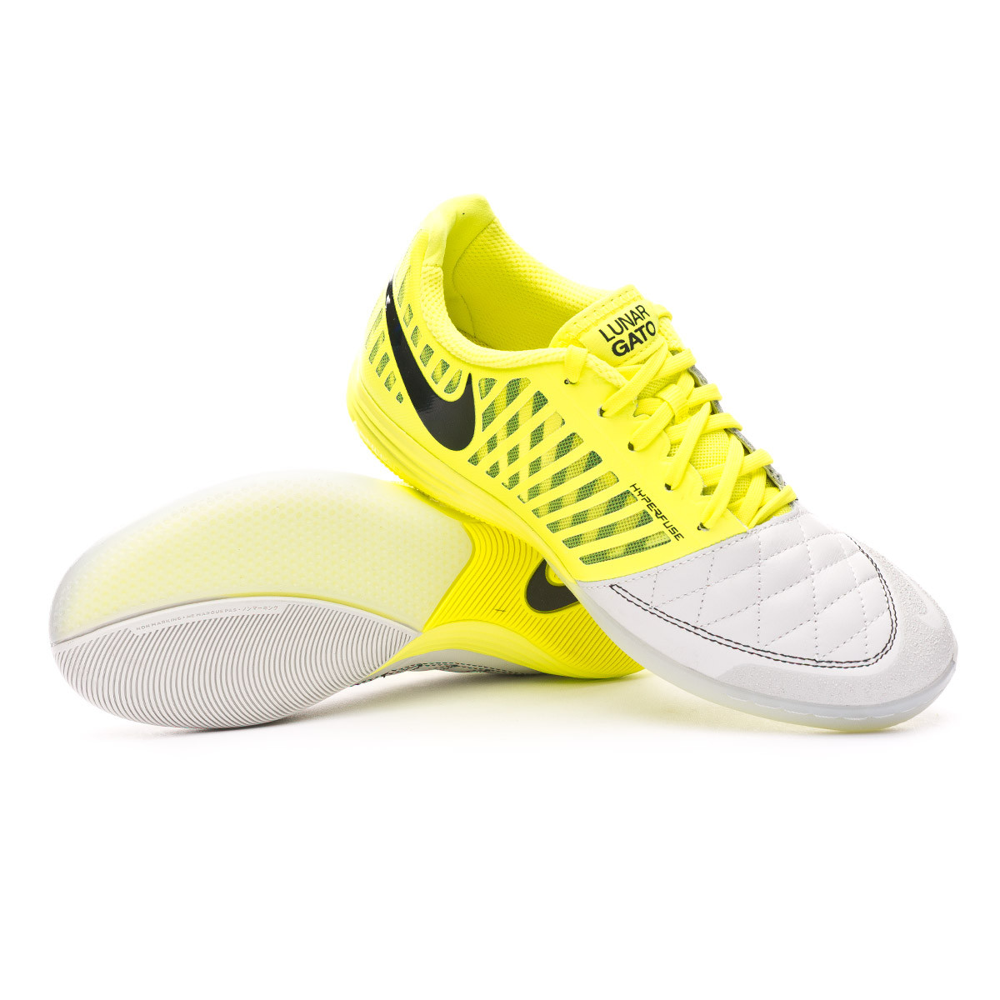

Nike Lunar Gato |
Información:Realizado en una suavísima y adaptable piel natural, lo que aporta un contacto perfecto con el balón. Presenta una zona de refuerzo granulada, tanto en la puntera como en los laterales, que se adhiere a la piel en forma de termosellado. Los laterales de la zapatilla utilizan paneles con tecnología Hyperfuse, la cual se combina a una malla, para hacerla más ligera y transpirable, reforzada con unas bandas laterales que aportaba rigidez, capaces de soportar todos los movimientos laterales. Uso de Lunarlon, material exclusivo de Nike, consistente núcleo de espuma blanda inyectada en una estructura ligera, que da como resultado un perfecto reparto de los impactos que recibamos en las pistas. Mantiene el material de la zona delantera e interna pero en este caso el diseño de las líneas es en forma de espiga para un apoyo multidireccional y buena tracción hacia cualquier dirección Este modelo se adapta a un mayor tipo de usos, es en pistas de interior y poco abrasivas donde realmente nos da mejor rendimiento, pero también se adapta a pistas más duras y abrasivas y a pistas de exterior. Precio: |
|---|